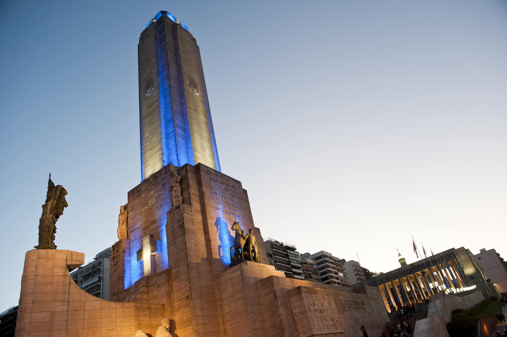
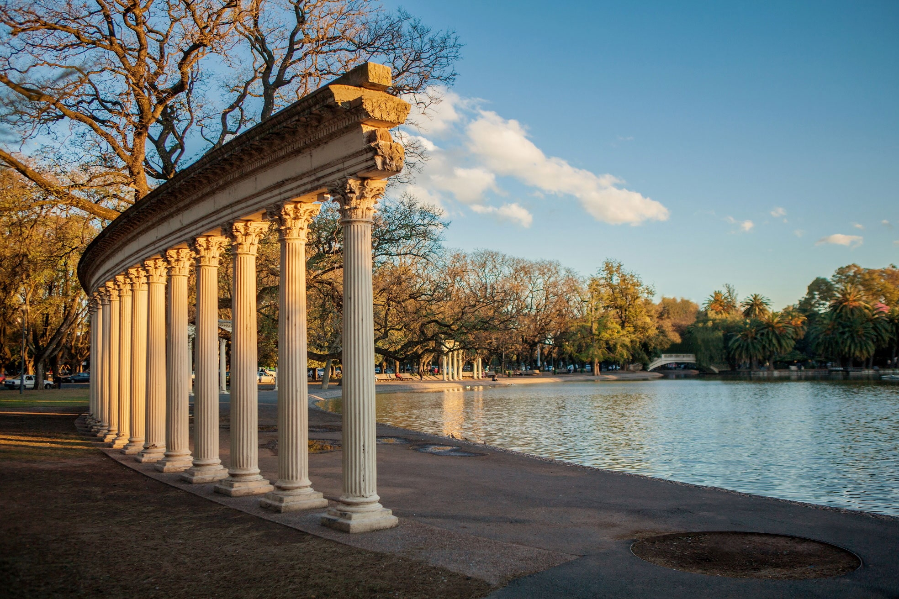
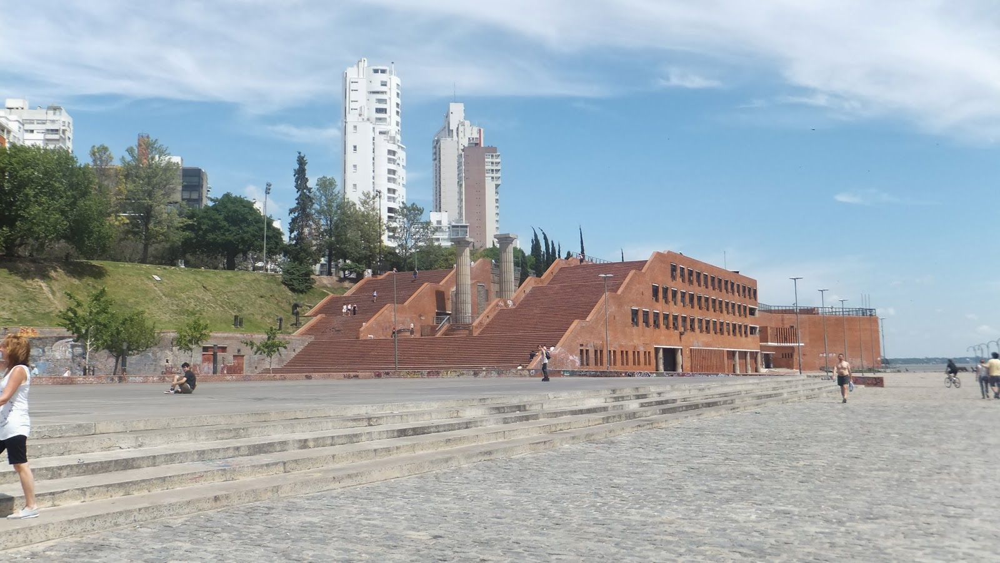
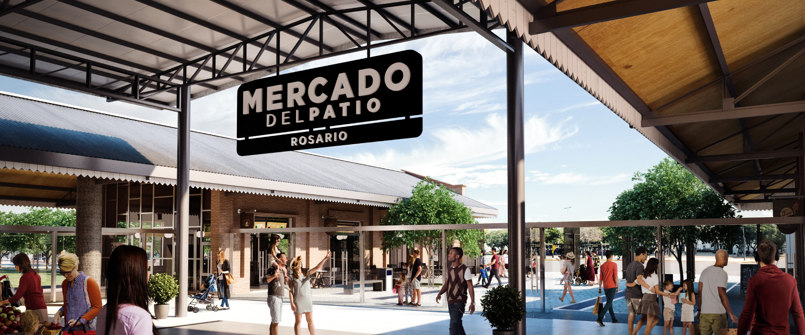

RosTourist: Lugares para visitar
Acá te dejamos una lista de los lugares más icónicos de la ciudad que no te pueden faltar en tu visita!
Monumento a la bandera

El gran y emblemático monumento a la bandera argentina es algo que cualquier turista va a querer conocer.
Parque Independencia

El Parque Independencia es el pulmón de la ciudad, muy bello y digno de visitar. Con muchos colores naturales a la vista.
Pichincha

En barrio Pichincha podrás encontrarte con muchas cervecerías, heladerías y parrillas frecuentemente visitadas en horarios nocturnos.
Parque España

El Parque España es un amplio sector aledaño a la línea costera de la barranca del Paraná, con césped y árboles, como pavimentos para pedestres, y un buen lugar de estacionamiento.
Mercado del Patio

Moderno mercado al aire libre que ofrece productos locales, delicatesen, quesos gourmet y otros productos.